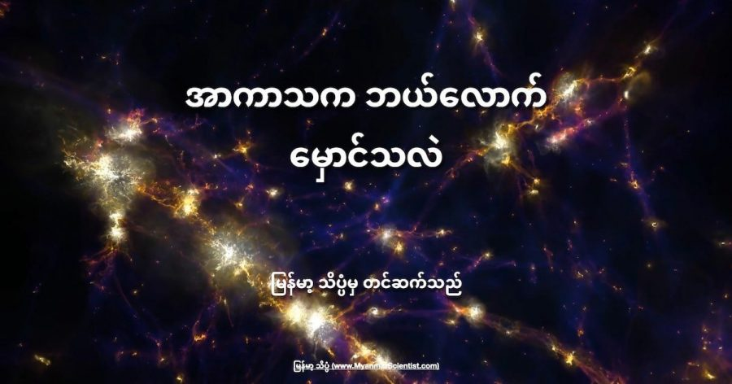

အာကာသဟာ မှောင်မဲ နေပါတယ်။ အဲ့တာကတော့ ငြင်းစရာ မလိုအောင် ထင်ရှားနေတာပါ။ တိမ်ကင်းစင် လမထွက်တဲ့ ညဖက် ကောင်းကင်ကြီးကို မော့ကြည့်လိုက် ပါဗျာ။ ကြယ်တွေ ကြားထဲမှာ အာကာသကြီး ဘယ်လောက် မှောင်မဲ နေသလဲ ဆိုတာ ထင်ထင်ရှားရှား မြင်ရမှာပါ။
ကျွန်တော်တို့ ကမ္ဘာက နေ အဖွဲ့အစည်းထဲ ရောက်နေပါတယ်။ ဒီတော့ နေကနေ ထုတ်လွှတ်တဲ့ အပူနဲ့ အလင်းရောင်ကို ရတော့ နေ့ဖက်ဆို လင်းထိန် နေတာပေါ့။
ဒါပေမယ့် နေကွယ်နေတဲ့ ညဖက်လို အခါမျိုးမှာဆို ကောင်းကင်မှာ ကြယ်တွေ ပြွတ်သိပ်နေအောင် တွေ့ကြရ မှာပါ။ မြို့ပေါ်မှာတော့ မြင်ရမှာ မဟုတ်ဘူး။ ဒါပေမယ့် တောထဲ တောင်ထဲ မီးမရှိတဲ့ အရပ်မှာ ညဖက် ကောင်းကင်ကို မော့ကြည့်လိုက်ရင် ပြွတ်သိပ်နေတဲ့ ကြယ်တွေကို စိန်မှုန်တွေ ကျဲထား သလိုမျိုး မြင်ကြရ မှာပါ။
ကောင်းကင်မှာ မြင်ရတဲ့ ကြယ်တွေ၊ မမြင်ရတဲ့ ကြယ်တွေ အားလုံးပေါင်းရင် အရေအတွက်က သန်း ချီပါတယ်။ ဒါပေမယ့် ဘာ့ကြောင့် ဒီလောက် များတဲ့ ကြယ်တွေဟာ ဆီက အလင်းဟာ ကျွန်တော်တို့ ဆီကို ရောက်မလာ နိုင်ရတာလဲ။
ဆက်စပ် ဆောင်းပါး – အာကာသက ဘယ်လောက်အေးလဲ
ပြောချင်တာကဗျာ မြင်ရတဲ့ ကြယ်တွေရဲ့ ကြားထဲက ကွက်လပ်တွေ ထဲမှာ မမြင်ရတဲ့ ကြယ်တွေ ရှိနေတယ်လေ။ ဒီ ကြယ်တွေ ဆီက အလင်းက ကျွန်တော်တို့ဆီ ရောက်မလာဘူးဗျ။ ဒါ့ကြောင့် မြင်ရတဲ့ ကြယ်တွေရဲ့ ကြားက ကွက်လပ်တွေက မှောင်မဲ နေတာပေါ့။
နက္ခတ်ဗေဒမှာ ဒီ ပြဿနာကို Olbers’ paradox (အောလ်ဘာ ဝိယောဒိ) လို့ ခေါ်ပါတယ်။ အောလ်ဘာ ဆိုတာက ဂျာမန်လူမျိုး နက္ခတ် ပညာက တစ်ဦးဖြစ်ပြီး သူက ဒီ ပြဿနာကို စတင် မေးခွန်း ထုတ်ခဲ့တာ ဖြစ်ပါတယ်။
ခုထက်ထိတော့ ဘယ်သူမှ ဒီ Olbers’ paradox ကို စိတ်ကျေနပ် လောက်တဲ့ အဖြေ မပေးနိုင် သေးပါဘူး။ အချို့ကလဲ ကြားမှာ ရှိတဲ့ ဖုန်မှုန့်တွေက ကြယ်တွေရဲ့ အလင်းရောင်ကို ကွယ်ထားလို့လို့ ပြောကြပါတယ်။ ဒါမှ မဟုတ်လဲ စကြာဝဠာရဲ့ တဖက်စွန်းက ကြယ်တွေရဲ့ အလင်းရောင် တွေဟာ အခုထိ ကျွန်တော်တို့ဆီကို ရောက်မလာကြ သေးလို့လဲ ဖြစ်နိုင်တာ ပါပဲ။
ဒါမှ မဟုတ်လဲ အရမ်းဝေးတဲ့ စကြာဝဠာ အစွန်းပိုင်းက ကြယ်တွေရဲ့ အလင်းဟာ စကြာဝဠာ ပြန့်ကား မှုကြောင့် အနီဖက် ပြောင်းသွားရာက အနီအောက် ရောင်ခြည် အဖြစ် ပြောင်းလဲသွားလို့လား။
ဆက်စပ် ဆောင်းပါး – အလင်း ဘယ်လောက်ဝေးဝေးထိ ရောက်နိုင်လဲ
လူသား တွေရဲ့ မျက်လုံးဟာ အနီအောက် ရောင်ခြည် (infrared) ကို မြင်တွေ့နိုင်စွမ်း မရှိပါဘူး။
အရမ်းဝေးတဲ့ အရပ်က ကြယ်တွေက အလင်းဟာ ကျွန်တော်တို့ဆီ ခရီး နှင်လာစဉ်မှာ စကြာဝဠာ ကြီးက ပြန့်ကား ထွက်နေတာ ဆိုတော့ ဒီ အလင်းလှိုင်းတွေ ကလဲ ဆွဲပြီး ဆန့်လိုက် သလို ဖြစ်သွားပါတယ်။ ဒီတော့ လှိုင်းအလျှား ရှည်ထွက်လာပြီး အရောင်က တဖြည်းဖြည်း အနီဖက်ကို ပြောင်းသွားပါတယ်။
ဒီ့ထက် လှိုင်းအလျား ပိုရှည်သွားရင်တော့ အနီရဲ့ အောက်ဖက်က အနီအောက် ရောင်ခြည်ခွင်ထဲ ဝင်သွားတာမို့ မျက်စေ့နဲ့ မြင်နိုင်တော့မှာ မဟုတ်ပါဘူး။
ဒါပေမယ့် ဒီ Olbers’ paradox ကို ခနလောက် မေ့ထားကြရ အောင်ပါဗျာ။ ကျွန်တော်တို့ သိချင်တာက နေနဲ့ ဝေးတဲ့ အရပ် ဒေသမှာဆို စကြာဝဠာကြီးက ဘယ်လောက်တောင် မှောင်မဲ သလဲ ဆိုတာပါပဲ။
ဆက်စပ်ဆောင်းပါး – အာကာသထဲကို ဘယ်လောက် ဝေးဝေးထိ မြင်နိုင်သလဲ
တနည်း ပြောရရင် အာကာသ အနက်ပိုင်းမှာ အာကာသယာဉ် နှစ်စီး တစ်စီးနဲ့ တစ်စီး မလှမ်းမကမ်း ကနေ ဖြတ်သွားရင် မြင်နိုင်မလား ဆိုတာပါ။
နက္ခတ် ပညာရှင် တွေကတော့ အာကာသယာဉ် နှစ်စင်း တစ်စီးနဲ့ တစ်စီး အာကသ ထဲမှာ လှမ်းပြီး မြင်နိုင်မမြင်နိုင် ဆိုတာ အတိအကျ ပြောဖို့ မလွယ်ပါဘူး လို့ ဆိုပါတယ်။
နက္ခတ် ပညာရှင် တစ်ယောက်က အာကာသ အနက်ပိုင်းမှာ ဘယ်လောက် မှောင်လဲ ဆိုတဲ့ အဖြေကို သိရဖို့ လက်တွေ့ တိုင်းထွာ ကြည့်ခဲ့ပါတယ်။
သူက အာကသ ထဲက ကမ္ဘာက လှမ်းမြင်ရတဲ့ ကြယ်တွေနဲ့ ဂလက်ဆီ တွေ တစ်ခုချင်းစီ ဘယ်လောက် လင်းလဲ ဆိုတာကို မူတည်ပြီး တွက်ချက်ကြည့် တာ ဖြစ်ပါတယ်။ ဒီ ကြယ်တစ်ခုချင်းစီ ဂလက်ဆီ တစ်ခုချင်းစီရဲ့ အလင်းအားကတော့ နက္ခတ် ပညာရှင်တွေ အတိအကျ တိုင်းထွာ ထားပြီးသားပါ။
ဆက်စပ်ဆောင်းပါး – စကြာဝဠာကြီးက ဘာအရောင် ရှိလဲ
ဒီ အလင်းအားတွေ အားလုံးကို စုပေါင်းပြီး တွက်ချက် ကြည့်တဲ့ အခါမှာ အာကာသ အနက်ပိုင်းက အလင်း ပမာဏဟာ အင်အား -၆.၅ (Magnitude -6.5) ရှိမယ်လို့ ဆိုပါတယ်။ (Magnitude ဆိုတာက ကြယ်၊ လ၊ နက္ခတ် တွေရဲ့ အလင်းအားကို တိုင်းတဲ့ ယူနစ် ဖြစ်ပါတယ်။)
ဒီ အလင်းအား ပမာဏဟာ လပြည့်ည လ ရဲ့ အလင်းအားရဲ့ ၀.၃% (၁၀၀၀ ပုံ ၃ ပုံ) ပမာဏ ရှိပါတယ်။
ဒါပေမယ့် ဒီ အလင်းအားဟာ စကြာဝဠာ တစ်ခုလုံးမှာ တသမတ်ထဲတော့ ရှိနေတာ မဟုတ်ပါဘူး။ ဒါက ကမ္ဘာက လှမ်းမြင်ရတဲ့ ကြယ်တွေ ဂလက်ဆီ တွေရဲ့ အလင်းအားကို မူတည်ပြီး တွက်ချက် ထားတာ မို့ပါ။
မစ်ကီးဝေး ဂလက်ဆီ ကြီးရဲ့ ဗဟို နားကို ရောက်သွားမယ် ဆိုရင် ကြယ်တွေ ပြွတ်သိပ် တည်ရှိနေတာမို့ အလင်းအား ကလဲပိုပြီး အားကောင်းလာ၊ လင်းထိန်လာမှာ ဖြစ်ပါတယ်။
ဒီလိုပဲ မစ်ကီးဝေး ဂလက်ဆီ အပြင်ဖက် ကြယ်တွေ ကင်းမဲ့တဲ့ နေရာက ဆိုရင်တော့ အာကာသ ကြီးဟာ ပိုပြီး မှောင်မည်းလို့ နေမှာ ဖြစ်ပါတယ်။
ကဲ့ ဒီတော့ ဒီလောက် အလင်းရောင် ပြပြလေး အောက်မှာ အာကာသယာဉ် နှစ်စင်း ဖြတ်သွားခဲ့ရင် တစ်စင်းကို တစ်စင်း လှမ်းမြင်ရနိုင်မလား။
ကြယ်ရောင် ပြပြလေး အောက်မှာ အခြား အာကာသယာဉ်ကို မြင်ရ မမြင်ရ ဆိုတာဟာ ဒီ အာကာသယာဉ် ပြင်က ကိုယ်ထည်က ဘယ်လောက် အလင်းပြန်လဲ ဆိုတာပေါ် မူတည်မှာ ဖြစ်ပါတယ်။
အကယ်လို့ အာကာသယာဉ်ရဲ့ ပြင်ကကိုယ်ထည်က အလင်းမပြန်ပဲ အနက်ရောင် ဆေးသုတ်ထားမယ် ဆိုရင်တော့ ဒီ ကြယ်ရောင် ပြပြအောက်မှာ မြင်ရဖို့ အတော်လေး ခဲယဉ်းမှာ ဖြစ်ပါတယ်လို့ ဆိုပါတယ်။
ဘာနဲ့ တူလဲ ဆိုတော့ လကွယ်ည ပင်လယ်ထဲ မီးမှိတ်ထားတဲ့ သင်္ဘော နှစ်စင်း ဖြတ်သွားတဲ့ အခါ တစ်စင်းနဲ့ တစ်စင်း လှမ်းမြင်ဖို့ အလွန် ခဲယှဉ်းတာနဲ့ နှိုင်းယှဉ် နိုင်ပါတယ်လို့ ပညာရှင် တွေက ထောက်ပြကြပါတယ်။
Reference: How dark is space? | BBC Sky at Night Magazine
အာကာသဟာ ဘယ်လောက် မှောင်သလဲ

March 2, 2022
Other Posts
- မစ်ကီးဝေး ဗဟိုက ထူးဆန်းတဲ့ ကြိုးမျှင်များ
- စတီဗင် ဟော့ကင်းရဲ့ Black Hole သီအိုရီ နှစ် ၅၀ အကြာမှာ သက်သေပြနိုင်ပြီ
- လေယာဉ် ဘယ်လိုလေထဲ ပျံသလဲ
- ရှေးအကျဆုံး အီဂျစ်မံမီ ရှာတွေ့
- အာကာသက ဘယ်လောက်အေးလဲ
- Tardigrade ရေဝံ ၏ မျိုးရိုးဗီဇအား လူ့ပင်မဆဲလ် အတွင်း ထည့်သွင်းပြီး ဆူပါစစ်သည်များ ဖန်တီးရန် တရုတ်သုတေသနပြု
- တင့်ကားဖျက် ဒုံးကျည် ဘယ်လို အလုပ်လုပ်လဲ
- အမြင်အာရုံလှည့်စားတဲ့ ဓါတ်ပုံရဲ့ လှို့ဝှက်ချက်
- ဘာ့ကြောင့် ဂြိုဟ်တွေဟာ လုံးနေရတာလဲ
- ကြယ်ကြီး ပေါက်ကွဲပြီး ကျန်ခဲ့တဲ့ တိမ်တိုက်ကြီး